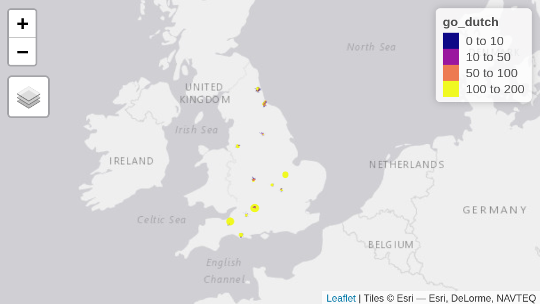

Active Transport Options for New Housing Developments: The ACTON project
Joey Talbot, Robin Lovelace
(University of Leeds)
Martin Lucas-Smith, Simon Nuttall
(CycleStreets)
Andrew Speakman (PlanIt)
Website: cyipt.github.io/acton
Source: vignettes/the-acton-project.Rmd
the-acton-project.RmdIntroduction
Decarbonising the transport sector is an urgent yet challenging component of climate change mitigation policies worldwide (Schock et al. 2007). Transport is now the UK’s largest and fastest growing source of carbon emissions— before the physical distancing measures introduced to tackle the Covid-19 pandemic at least. Unlike other sectors the UK transport system has not seen any reduction in recent years (Hickman and Banister 2007). The government’s agressive and legally binding climate targets, plus overwhelming evidence of the health and social benefits of active travel, make it vital that new developments are conducive to low-carbon lifestyles including low levels of car ownership and use, and high levels of walking and cycling for everyday trips. Unfortunately the trend has been in the opposite direction. New residential developments, and even recently planned but not yet approved sites, tend to be located in places, and have designs, that lock residents into car dependent lifestyles, something that central government aims to tackle in future policies (MHCLG 2020). This project tackles this issue head-on, by creating actionable evidence to modify plans and adapt existing new developments to ensure they can support car-free and active lifestyles.
Components of the ACTON project
The ACTON project brings together several key datasets to answer the question how can we improve new housing developments for walking and cycling?
To do this we use a range of transport and planning data:
- planning applications
- census data
- accessibility statistics
- routing algorithms
- cycle uptake models
This is illustrated in the schematic diagram below.

Schematic diagram of the ACTON project and its four main data sources (boxes)
Several outputs that were developed during the course of the project. These, and the potential for further work to inform regional and national development policies, were discussed in workshop held in Leeds in March 2020.
On the technical side, we developed open source software to support the project, an R package named acton, to ensure reproducibility and to provide a strong foundation for further work. The package contains functions that aid the import of planning application and accessibility data.
We tested the methods on a case study of Leeds to investigates the accessibility for active travel of a set of new housing developments in Leeds, West Yorkshire. This is documented in the case studies report.
Finally have laid the foundations needed to develop a nationally scalable indicator to predict active travel mode shares associated with new housing developments.
These will each be described in greater detail in the remaining sections of this report.
The ACTON Datasets
There are a series of datasets which have either been further developed as part of the ACTON project, or where the ACTON project has helped to open them up for a wider range of uses. We will describe these sources in turn.
Planning application data - the PlanIt website
To investigate the accessibility of new housing developments, it is first necessary to identify where new homes are being built.
There are over 300 local planning authorities across England, including metropolitan boroughs, London boroughs, unitary authorities and non-metropolitan districts. Each of these planning authorities keeps an online record of current and historic planning applications, such as applications to build new homes. The data recorded will include information about the status of the application, the site location, related applications, a description of the proposed application and links to download associated files such as masterplans and transport assessments.
However, there is no real standardisation of how these planning applications are recorded. For example, various different types of application exist, such as full, outline, reserved matters, and applications for tree works. Yet the codes that record application type vary from one council to the next.
Moreover, there is no systematic national recording of where homes are being built. The Ministry of Housing, Communities & Local Government produces statistics on the number of new build housing starts and completions in each local planning authority, but this simply records the number of homes in each district. There is no indication of exactly where these homes are being built.
New developments data from PlanIt
To address this problem, the PlanIt website was developed, prior to the present study. The website aggregates and maps current and historic planning applications across the UK, scraping the data from all planning authority websites (98% coverage), converting this into a single database, and making them accessible from a single source. PlanIt collects all types of planning application, not just applications relating to house building. Updates are made daily.
PlanIt API
PlanIt has an API (application programming interface, a data interface usable within a programming context) which allows users to search for planning applications using a range of criteria, such as address, planning authority, bounding box, date or planning application identifier.
As part of ACTON (and using funding from an Innovate UK project, StreetFocus), the PlanIt API has been improved to make it easier to search for particular types of planning application. These updates are were based on a development version of PlanIt API that will be incorporated into the main PlanIt website by end of May 2020.
We derived terms for the following searchable fields:
‘app_size’ (for the scale of the proposed development) - including: Large = Major, large scale developments; Medium = Other applications involving multiple dwellings; Small = All others
‘app_state’ (to show the decision status for the application) - including: Undecided = The application is currently active, no decision has been made; Permitted = The application was approved; Conditions = The application was approved, but conditions were imposed; Rejected = The application was refused; Withdrawn = The application was withdrawn before a decision was taken; Referred = The application was referred to government or to another authority; Unresolved = The application is no longer active but no decision was made eg split decision; Other = Status not known
‘app_type’ (to show the type of application) - including: Full = Full and householder planning applications; Outline = Proposals prior to a full application, including assessments, scoping opinions, outline applications etc.; Amendment = Amendments or alterations arising from existing or previous applications; Conditions = Discharge of conditions imposed on existing applications; Heritage = Conservation issues and listed buildings; Trees = Tree and hedge works; Advertising = Advertising and signs; Telecoms = Telecommunications including phone masts; Other = All other types eg agricultural, electrical
The number of homes built in a residential development is a key factor of interest, along with any other facilities being constructed. This information is difficult to obtain as it is often not present in the description field of planning applications. Proxy methods for assessing scale have therefore been used, such as the number of documents within a planning application and the length of time allowed before deciding a large scale application. For example, criteria for ‘app_size’ = large include applications having >100 attached documents and >60 statutory days allowed before a decision is made on the application.
The ongoing further development of PlanIt will have many benefits beyond the ACTON project, since it will make it easier to find planning applications of interest for all sorts of purposes. For example, StreetFocus.uk makes PlanIt data more widely available, with a public-facing website that brings the PlanIt planning application data together with street-level data on proposals for local improvements to the public realm or to active travel infrastructure. This can be used to help identify places where new developments could potentially help to fund nearby improvements through mechanisms such as S106 agreements. Enabling these synergies to be identified at an early stage in the planning process allows great scope for assisting both the proponents of local improvement schemes and the developers who desire greater certainty in terms of the level of S106 funding they are called on to provide.
Accessibility data
In assessing the suitability of a proposed site for residential development, one of the most important questions will be how accessible the site is. The provision of local services and community facilities is a key enabler of active travel. It is no use building top quality cycle and walking provision within the site if residents are presented with a 30 minute walk from their homes to reach the local shops.
Journey time statistics published by the Department for Transport record the time taken to reach a range of services such as primary and secondary schools, food stores, GP surgeries, centres of employment and town centres. These are available at the geographical level of the LSOA, an area covering a population of approximately 1500 people or 650 households. The statistics include journey times by three different modes of travel:
- car
- bicycle
- a combined walking / public transport measure, showing the fastest journey time by these two modes (either walking alone or walking and public transport in combination).
The acton R package (described below) includes a function for the import of the these journey time statistics into R.
Demographic data
We obtained demographic data from the 2011 census, including the method of travel for journeys to work and journey origin-destination data. With its comprehensive national coverage, this allows us to investigate journey origins and destinations with the high geographical resolution necessary to differentiate new housing developments from neighbouring areas of older housing stock.
Of course, the ACTON project aims to enable the investigation of the many new residential developments that have been built since 2011 and for which travel data is not available, but to do this we need an existing data source to allow methods to be developed. Census data is a key data source for the Propensity to Cycle Tool, and we use the pct R package to access this data.
Routing algorithms
Sources such as census data provide information on journey origins and destinations. Missing from this are the routes that are used to travel from the origin to the destination. These routes must be inferred using routing algorithms.
CycleStreets.net is a journey planner focusing on routes used for cycling. With a public facing website, CycleStreets helps people find a cycle route that is right for them. Such routes range from direct routes appropriate for confident on-road cyclists to quieter routes for people who want to avoid busy roads.
CycleStreets includes three routing options, generating ‘fast’, ‘balanced’ or ‘quiet’ cycle routes between journey origins and destinations. For the fast routes, journey time is minimised, with no consideration given to factors such as the busyness of the roads. For the quiet routes, a parameter called “busyness” is minimised. The balanced routes use a combination of these two approaches, in which both journey time and busyness are taken into account.
As part of ACTON we have improved the way in which the busyness of particular types of cycle lane and path is classified, leading to better quality routing of ‘quiet’ routes through a more accurate characterisation of the cycleability of route segments. The figure below illustrates the improvements to the routing profile that have been made, with increased weighting given to protected cycleways clear from the long green segment on the canal towpath.

Busyness estimation
New homes often lie close to major roads and bypasses that act as barriers which limit or discourage sustainable modes of travel. By contrast, there are sometimes long established bridleways, towpaths or other paths which could be upgraded.
CycleStreets uses a key metric, known as the ‘busyness score’ to rate each section of a cycle route. This provides a measure of the cycleability of the route and helps determine the suitability of it for each type of rider. It takes into account many features of the streets and paths used for cycling, including the width, speed limits, presence of cycle lanes or dedicated cycle tracks, and obstacles along the way.
As part of ACTON the process of setting the busyness score by CycleStreets is being further developed. This will allow it to take account of new types of cycling infrastructure and move towards a model that distinguishes between eight different states of cycling that are fundamental to how people choose a route. For instance, this enables a distinction between high-quality, dedicated cycle infrastructure, and shared-use paths which involve sharing often narrow space with pedestrians.
We estimate the busyness of the roads which constitute routes from our case study sites to workplaces or other key destinations. The improved busyness score will allow calculation of an index of average road busyness for the area surrounding each site.
Uptake scenarios
The Propensity to Cycle Tool (PCT) is a well-used national tool for cycle infrastructure planning. It uses 2011 Census data and CycleStreets.net routing services to map current cycling levels at high geographic resolutions, as well as a series of scenarios modeling how cycle usage could increase. These scenarios take the same journey origin-destination data from the 2011 Census and estimate how the share of journeys by different methods of travel could change. In particular, the Go Dutch scenario models what would happen if people in the UK cycled as much as those in the Netherlands, accounting for journey distance and hilliness.
An existing limitation of the PCT is the fact that because it uses 2011 census data it does not account for new developments built since 2011. ACTON exists to bridge this gap, by applying PCT methods to new residential areas. An example of this can be found in the Leeds case study described below, where we take journey to work origin-destination data for the LSOAs (Lower Super Output Areas) closest to the new housing sites, reroute this to move the journey origin to the sites themselves rather than the nearest LSOA centroid, then apply the Go Dutch scenario to investigate expected levels of cycling uptake for these routes.
R package
One of the outputs of this project is the acton R package. Available as open source code on GitHub, this includes two main functions that allow users to download planning application and accessibility data, for use in subsequent analysis.
Installing the R package
To install the acton package, run the following commands in an R console (see here for information on installing R):
install.packages("remotes") remotes::install_github("cyipt/acton")
After it has been installed, the package can be loaded as follows:
library(acton)
Functions
The acton package contains two main functions:
- get_planit_data()
- get_jts_data()
The function get_planit_data() allows R users to search for planning application data without having to use the PlanIt API directly. This can broaden the use of PlanIt by helping to make its data easier to obtain.
The function get_jts_data() enables the downloading of journey time statistics. There are 44 tables in total, most of which include annual data for the years 2014 to 2019.
Brief demo
The package can be used to get data on new developments as follows:
# data from specific postcode planning_data = get_planit_data(pcode = "LS2 9JT", limit = 2, app_size = "large") planning_data planning_data$name planning_data$description jts_tables unique(jts_tables$table_title) accessibility_data = get_jts_data() get_jts_data(table = "jts0101", year = 2017, skip = 7)
Further R instructions
To get routes from CycleStreets.net, you will need to set up an API key called CYCLESTREETS. This can be done with usethis::edit_r_environ(), as documented at https://docs.ropensci.org/stplanr/.
Leeds case study
The data sources described above were explored for case study of new housing developments in Leeds. We investigated accessibility across the city for active travel modes. Using CycleStreets.net for journey routing, we look at journeys to work for the residents of four new housing sites.
Planning applications
Data from PlanIt, accessed using the acton R package, was used to identify recent large planning applications within the city boundaries:
The following code gets and subsets the relevant PlanIt data for Leeds. This extracts large applications where planning consent has been granted:
applications_leeds = get_planit_data( limit = 500, auth = "Leeds", app_size = "large", app_state = "permitted" )
## Getting data from https://dev.planit.org.uk/api/applics/geojson?limit=500&bbox=&end_date=2020-04-08&start_date=2000-02-01&pg_sz=500&auth=Leeds&app_size=large&app_state=permitted
The resulting data rich information about the planning applications, an overview of which is shown in the figure above.
The four chosen sites
From the 281 large planning applications identified as described above, we have selected four of these for which the descriptions reveal a high number of homes have been consented.
## [1] 4An overview of the four case study sites is shown in the map below.

See https://cyipt.github.io/acton/articles/case-studies.html for more on the case study sites.
We will describe the Allerton Bywater application in more depth and use it to illustrate the data returned by the PlanIt API, before describing the other development sites.
Allerton Bywater Millennium Community
One of a series of Millennium Communities, the development at Allerton Bywater was announced by John Prescott in 1998. The homes lie on the site of Allerton Colliery, which was the last remaining colliery in Leeds when it closed in 1995. Prior to the development, Allerton Bywater village had a population of around 4,000, and the aim was to incorporate the whole of the village in the project, rather than solely focusing on the site itself. For example, a £500,000 community fund was made available to the parish council to spend on local projects, and community buildings in the village were also refurbished. In total there was £24 million upfront public investment by English Partnerships and the HCA. This included drainage, site clearance and decontamination.
The development incorporates new industrial and office units as well as homes, with high environmental standards for both of these. A design code was adopted and development of the site began in 2005. The industrial units at the east of the site were the first in the UK to meet the BREEAM ‘Excellent’ standard, while the new homes were built to the EcoHomes ‘Excellent’ standard or the Code for Sustainable Homes Level 3. A number of homes were built under a ‘Design for Manufacture’ competition for a construction cost of no more than £60,000.
In total there are 562 homes in the Millennium Community. A Sustrans cycle route passes through the site and there is good walking and cycling access to the rest of the village and its surrounds, although parts of the cycle route can get very muddy in winter. Local services such as shops, pubs, cafes, a primary school, park, community centre and nature reserve lie on the edge of the site or within easy walking distance.
Plans for buses to be routed through the site did not materialise. The village lies eight miles southeast of Leeds and the buses to Leeds run roughly every 30 minutes. There are more frequent services to Garforth and Castleford. The nearest railway station is Castleford, at 43 minutes walk, with a well-built riverside path to follow. Much of the Millennium Community is designed as a HomeZone with shared space streets, although these tend to fill up with parked cars. Initial phases were built with 1.6 parking spaces per dwelling, but the amount of on-street parking lead to calls to increase this and later phases have 2 parking spaces per dwelling.
Data on the application
The planning application we have selected for Allerton Bywater relates to the final phase of the Millennium Community. This includes 189 homes and has planning consent 13/05235/FU.
We can see that this is classified by PlanIt.org.uk as a large application. The application was submitted in December 2013 by Keepmoat Homes and the Homes and Communities Agency and was approved in November 2014.
Available fields include links to the full PlanIt record and to planning application information from Leeds City Council, as illustrated in the online version of this report at https://cyipt.github.io/acton/articles/the-acton-project.html.
Leeds Climate Innovation District
Situated on the banks of the River Aire, close to Leeds city centre, the Climate Innovation District is being developed by Leeds-based firm Citu. The development is built around high environmental standards including low carbon timber-framed homes with high levels of insulation and a Mechanical Ventilation Heat Recovery System preventing the need for gas central heating. The homes will be served by solar panels on-site via a private-wire network; a Community Interest Company will be set up that will own the utility cooperative.
A new foot/cycle bridge has been erected over the River Aire to connect the two halves of the site and allow a traffic-free route into the city centre. On-site car parking is in an undercroft; these spaces have to be purchased at a cost of £15,000. Cycle parking is available on-site.
In total there will be over 520 new homes. Phase 1 to the north of the river will contain 312 dwellings, with planning consent 15/00415/FU.
Micklefield
Planning consent 15/01973/FU is for a development of 292 residential dwellings by house builders Barratt Homes and Persimmon Homes on greenfield land in the village of Micklefield, nine miles east of Leeds.
The site does not fully meet the Leeds Core Strategy Accessibility Standards. There are bus stops nearby but the services are infrequent, with only an hourly service increasing to two an hour at peak times. However, Micklefield station allows access to Leeds city centre with a 20 minute journey time. The S106 agreement includes £8000 for improved cycle facilities at the station. It also mandates 15% affordable housing, of which 60% is for social rent.
Tyersal
Planning consent 15/04151/FU was gained in April 2016 for a 270 dwelling development on a greenfield site at Tysersal Lane by developer Gleeson Homes. Although the site lies within ths bounds of Leeds it is actually closer to Bradford, and the only road access is to west, via the Bradford suburb of Holme Wood. Regular buses to Bradford city centre pass by the edge of the site. The proposed parking provision is approximately two spaces per dwelling.
The site does not fully meet the Leeds Core Strategy Accessibility Standards. A viability assessment was accepted, stating that the scheme could not provide all of the usual planning gain contributions (S106 monies), with no affordable homes due to be built on site. This is subject on ongoing review. Gleeson’s state that their homes are priced at a level so that they can be afforded by 90% of local people in full time employment.
Accessibility indicators
Journey time statistics (JTS) are available from the Department for Transport recording accessibility at the geographical level of the LSOA (an area covering approximately 1500 residents or 650 households). The statistics include average minimum travel times to key local services and destinations, such as town centres, centres of employment, primary schools, secondary schools, food stores and GP surgeries.
Travel times are calculated for three modes of travel - by car, by cycle, and by a mode that combines walking and public transport.
In the following code we download data for journey times to the nearest centres of employment, town centres, food stores, primary schools, secondary schools and GP surgeries.
There are several different statistics representing employment centres. We combine measures for employment centres of different sizes to create a single employment metric. We then combine this with the other journey time statistics to generate a single index of accessibility for each mode of travel.
Now we can map the journey time statistics across Leeds and West Yorkshire.
The first map shows the LSOA zones in Leeds together with their working age population. LSOA population should normally be relatively constant, but it is considerably higher in some Leeds LSOAs. This may be due to new residential developments built after the LSOA boundaries were set, in particular student accommodation and the recent growth in city centre living.
The JTS record travel times from the population weighted centroid of each LSOA. New housing developments can be constructed anywhere within an LSOA, and may not necessarily be close to existing homes. To assess the accessibility of new developments we therefore use statistics that relate to the closest LSOA centroid. For our Tyersal Lane case study site, the closest LSOA centroid is in Bradford.
Multiple statistics are available for access to centres of employment, including travel time to locations with 100-499 jobs, to locations with 500-4999 jobs, and to locations with 5000+ jobs. As explained earlier, we combined these three statistics to produce a single measure weighted by the number of jobs. This is shown in maps below.

We have then combined the weighted access to employment measure with the measures for access to food stores, town centres, primary schools, secondary schools and GPs. By adding together all of these scores we have generated a single accessibility index for each mode of travel.

According to these measures, there are many areas that have poor accessibility by active modes and public transport.
Route busyness
Route busyness is calculated from OD data, based on journeys to work from the LSOA centroid closest to each site in the first instance, allocated to the transport network. The point of origin was updated so routes start at in the case study sites. The desire lines were converted to routes using ‘fastest journey’ option of the cyclestreets::journey() function and the routing capabilities in the R package stplanr (Lovelace and Ellison 2018).
The thickness of the lines in the map below, which illustrates route busyness data, is proportional to the number of journeys (using all modes of transport), and the colour represents the busyness of the roads. For other maps, see the Case Studies report on the ACTON website.

Modelling walkability and cyclability
Using data from new housing developments built prior to the 2011 Census, we started development of a model to predict active travel levels to and from new homes, building on the methods underlying the Propensity to Cycle Tool (Lovelace et al. 2017).
As a response variable we are using the proportion of commuters who cycle to work. This is available at the Output Area level, allowing us to obtain data that precisely matches the geographical bounds of the new development sites.
Similarly to the Propensity to Cycle Tool, the explanatory variables currently include the distance and hilliness of journeys to work. To calculate these, we route journeys using the CycleStreets.net ‘fast’ route algorithm. Workplace destinations are obtained and routing carried out at LSOA level, to minimise the computational intensity of journey routing.
The range of explanatory variables can be expanded further as more data becomes available, adding factors such as the busyness and circuity of the routes.
For the test version of this model we have used data from 12 sites across England, including Allerton Bywater in Leeds. The number of sites can expand as we further develop the model.
New developments in the 2011 Census
Desire lines from the 12 sites to places of work are shown below.

We then convert these straight lines into routes on the road network, using the CycleStreets.net routing service.

These route can be combined to form route networks, thus revealing the numbers of people expected to use each road or path segment. Here we show the route network under a Go Dutch scenario in which cycling rates are equivalent to those found in the Netherlands.

Zooming in to a single site, we can see the route network in more detail.
Conclusions
The ACTON project has successfully demonstrated that combining multiple sources of data in a single analysis can provide a strong, actionable evidence-base for improving active travel provision associated with new developments. Although the input datasets used by ACTON were already in the public domain, they were scattered across multiple websites making them hard to access, let alone use as the basis of evidence-based decision-making.
The methods have been demonstrated using real-world developments from a case study of Leeds. Furthermore, these methods have been implemented in new software, the acton R package, which represents a step change in the accessibility of vital sources of data for policymakers and planners:
- Data on new developments is now far more accessible to researchers and others without needing to write API queries via the new function
get_planit_data() - Data on accessibility is now far more accessible to researchers via the new function
get_jts_data(), which gets data from DfT’s open Journey Time Statistics
These functions and the datasets they open-up provide a strong foundation for further work. The methods are modular, meaning they can be combined with additional approaches such as spatial network analysis (Cooper 2018) and pre-existing scenarios of active transport uptake (Goodman et al. 2019). We plan to work with potential funders to ensure that the value generated in the course of this 3 month project can be made available to everyone, either as a self-standing tool or as part of a wider toolkit for sustainable transport planning.
Details about follow-on work will be posted on the project’s issue tracker at https://github.com/cyipt/acton/issues, where interested stakeholders are welcome to post ideas and follow-on questions.
References
Cooper, Crispin H. V. 2018. “Predictive Spatial Network Analysis for High-Resolution Transport Modeling, Applied to Cyclist Flows, Mode Choice, and Targeting Investment.” International Journal of Sustainable Transportation 0 (0): 1–11. https://doi.org/10.1080/15568318.2018.1432730.
Goodman, Anna, Ilan Fridman Rojas, James Woodcock, Rachel Aldred, Nikolai Berkoff, Malcolm Morgan, Ali Abbas, and Robin Lovelace. 2019. “Scenarios of Cycling to School in England, and Associated Health and Carbon Impacts: Application of the ‘Propensity to Cycle Tool’.” Journal of Transport & Health 12 (March): 263–78. https://doi.org/10.1016/j.jth.2019.01.008.
Hickman, Robin, and David Banister. 2007. “Looking over the Horizon: Transport and Reduced CO2 Emissions in the UK by 2030.” Transport Policy 14 (5): 377–87. https://doi.org/10.1016/j.tranpol.2007.04.005.
Lovelace, Robin, and Richard Ellison. 2018. “Stplanr: A Package for Transport Planning.” The R Journal 10 (2): 7–23. https://doi.org/10.32614/RJ-2018-053.
Lovelace, Robin, Anna Goodman, Rachel Aldred, Nikolai Berkoff, Ali Abbas, and James Woodcock. 2017. “The Propensity to Cycle Tool: An Open Source Online System for Sustainable Transport Planning.” Journal of Transport and Land Use 10 (1). https://doi.org/10.5198/jtlu.2016.862.
MHCLG. 2020. “Planning for the Future.” Ministry of Housing, Communities & Local Government.
Schock, R N, A Adegbululgbe, J Fenhann, I Konstantinaviciute, W Moomaw, H B Nimir, B Schlamadinger, et al. 2007. “Energy Supply.” Climate Change 2007: Mitigation. Contribution of Working Group III to IPCC’s Fourth Assessment Report.